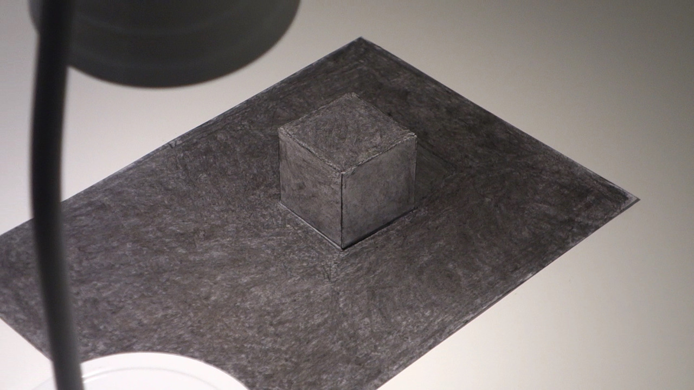

An Attempt to Make a Cube Disappear II.

(a visual depiction of a non object)
charcoal , 210 x 297 x 50 mm
2015 – 2016
The question is concerned with the relationship between the object and its sight. In this experiment, I’m looking for a specific image that cancels out thecube’s appearance, the image that is the inverse of the cube`s appearance. The following experiments are the first steps in this series, where the image appears on the subject itself. As a first experiment, I folded the cube out of a lightsensitive paper, which I exposed to the light of a lamp. The photo paper not only captures nuances from the environment and form, but displays the negative. This way it represents the negative of the appearance of the white cube itself. If I place the resulting cube in front of the lamp again, the inverse image on it would cancel out the shading (i.e. its appearance) on the original white cube, but with the resulting image on its surface, it is no longer quite the same cube. The interaction of the object and its sight, although constantly changing, is approaching to a certain target.
Kísérlet egy kocka eltűntetésére II.
Az a kérdés foglalkoztat, hogy milyen viszonyban van a tárgy és annak látványa. Ebben a kísérletben azt a képet keresem, ami a kockával kölcsönhatásba lépve, kioltja annak látványát, a képet ami a kocka látványának inverze. Az alábbi kísérletek ennek a sorozatnak az első lépései. Ahol a kép magán a tárgyon jelenik meg. Első kísérletként a kockát fényérzékeny papírból hajtogattam, amire ráexponáltam egy lámpa fényét. A fotópapír nemcsak rögzíti a környezetből és a formából adódó árnyalatokat, de épp a negatívját jeleníti meg. Ezzel, a fehér kocka képének negatívját ábrázolja önmagán. Az így létrejött kockát ha újra lámpa elé helyezem, a rajta levő inverz kép bár kiolthatná az eredeti fehér kockán megjelenő fény-árnyék hatásoka (azaz annak látványát), viszont a rajta keletkezett képpel ez már nem egészen ugyanaz a kocka. A tárgy és a látványának kölcsönhatása, bár folyamatosan változó, de egy egyértelműen meghatározható kép felé közelít.